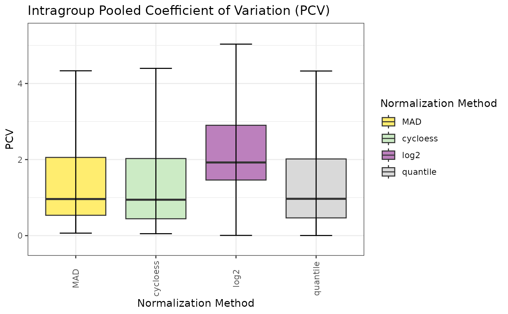

Generate quality metric plots for normalization comparison
Source:R/Normalization_Metrics.R
normalization_metrics.RdCalls all (or selected) nm_plot_*() functions on a SummarizedExperiment
produced by import_norm_matrices(). Each plot is wrapped in tryCatch()
so that a failure in one plot does not abort the entire run.
Usage
normalization_metrics(
se,
assay_names = NULL,
condition_col = "Condition",
plots = "all",
cor_method = "pearson",
pca_scales = c("free", "fixed", "both"),
mds_scales = c("free", "fixed", "both"),
methods = NULL,
method_args = list(),
base_assay = "log2",
seed = 42L,
verbose = TRUE,
output_dir = NULL,
export_plots = TRUE,
export_tables = TRUE,
plot_width = 12,
plot_height = 8,
plot_dpi = 150
)Arguments
- se
SummarizedExperiment from
import_norm_matrices().- assay_names
Character vector of assay names to include. NULL (default) = all assays.
- condition_col
Column name in
colData(se)with condition labels. Default"Condition".- plots
Character vector of plot names to generate, or
"all"(default). Valid names:"boxplot","density","pcv","pmad","pev","pca","correlation","mds","scatter","qq","metrics","pc1_ranking","mds1_ranking","final_ranking". Whenpca_scales = "both","pca"expands to"pca_free"+"pca_fixed". Whenmds_scales = "both","mds"expands to"mds_free"+"mds_fixed".- cor_method
Correlation method for
nm_plot_correlation(). Default"pearson".- pca_scales
Facet scaling for PCA plot:
"free"(default),"fixed", or"both"to generate and export both variants (pca_freeandpca_fixedin the returned list).- mds_scales
Facet scaling for MDS plot:
"free"(default),"fixed", or"both"to generate and export both variants (mds_freeandmds_fixedin the returned list).- methods
Character vector of normalization method names to auto-benchmark,
"all"for the 12 benchmark methods ("log2"is the baseline and is excluded, so this is one fewer than the 13 thatnormalize_proteomics()accepts), or NULL (default) to skip auto-normalization and use existing assays.- method_args
Named list of per-method arguments forwarded to
nm_run_normalizations(). E.g.list(cycloess = list(method = "fast", span = 0.8)).- base_assay
Name of the baseline assay to normalize from when using auto-normalization. Default
"log2".- seed
Integer. Seed passed to
nm_compute_metrics()for the two metrics that use randomness, the Hopkins statistic and the PERMANOVA p-value. Default 42.- verbose
Logical. Print progress messages. Default
TRUE.- output_dir
Character. Path to export directory. If
NULL(default), no files are exported. When set, tables (TSV) and/or plots (PNG) are saved to this directory (created if needed).- export_plots
Logical. Export plots as PNG when
output_diris set. DefaultTRUE.- export_tables
Logical. Export tables as TSV when
output_diris set. DefaultTRUE.- plot_width
Numeric. Width in inches for exported plots. Default
12.- plot_height
Numeric. Height in inches for exported plots. Default
8.- plot_dpi
Numeric. Resolution for exported plots. Default
150.
Value
Named list of ggplot objects (or NULL for failed plots), plus
data.frames always computed regardless of plots selection:
metrics_table (from nm_compute_metrics()), pc1_rank, mds1_rank,
pcv_rank, pmad_rank, pev_rank, cor_rank, and final_rank
(combined ranking as the mean of the five ranks Rank_PCV, Rank_PMAD,
Rank_PEV, Rank_Cor and Rank_Sep; pc1_rank and mds1_rank are
standalone diagnostics and do not enter it).
Details
When methods is provided, the function first runs
nm_run_normalizations() to automatically apply the requested normalization
methods from the base_assay, then computes metrics and generates plots on
the resulting multi-assay SE.
Examples
data(nadia_dia)
se <- nm_prepare_se(nadia_dia, verbose = FALSE)
# Auto-benchmark: normalize from the "log2" baseline, then score the methods
res <- normalization_metrics(se, methods = c("cycloess", "quantile", "MAD"),
plots = c("pcv", "final_ranking"), verbose = FALSE)
res$final_rank
#> Method Rank_PCV Rank_PMAD Rank_PEV Rank_Cor Rank_Sep Rank_Final
#> 1 cycloess 1 1 1 1 3 1.4
#> 2 quantile 3 2 2 4 1 2.4
#> 3 MAD 2 3 3 3 2 2.6
#> 4 log2 4 4 4 2 4 3.6
res$pcv
